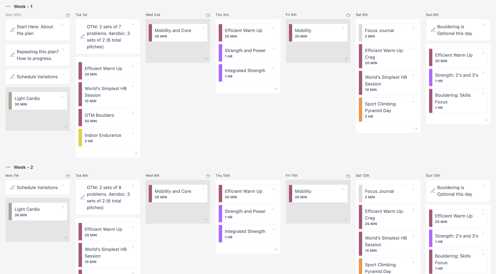

28/9/26
This is a strength and power focused version of the Sport Climbing Plan. It's a great off-season or pre-season block to build up your ability to do hard moves and sequences and uses bouldering as a primary tool.
Improving your sport climbing requires development of base endurance along with strength and power. It's also important to spend time practicing on the rock using these abilities. This plan sticks to the basics and progresses over the course of 4 weeks for a repeatable training plan that will produce long-term improvements in sport climbing performance. This plan can and should be repeated for a few months in a row for best results.
This plan is built around a typical weekend warrior schedule, but can be modified and adapted for use by climbers with more flexibility and time to get outside. The plan is currently set up with Day 1 being a Saturday. Any of the climbing portions of the sessions can be done in a climbing gym or outside at the crag.
28/9/26
This plan can be run several times in a row with good results. If you choose to do this plan for another month, you'll want to make a few changes to keep progressing:
By making these small adjustments each cycle, you'll continue to see strength and power gains, and become a more well-rounded, effective sport climber.
28/9/26
This plan is flexible to your schedule and life. Getting at least one day outdoors should be a priority if you can, but if conditions or life prevent this, simply do the Boulder Doubles session. If you can get into a rope gym as well on the weekend, do the Boulder Doubles session one day and a Sport Climbing Pyramid day indoors on the other.
